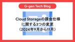
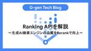
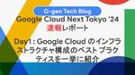
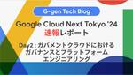
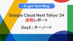
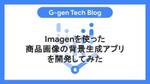

G-gen Tech Blog
https://blog.g-gen.co.jp/
Google Cloud(旧称GCP)の情報発信を行う技術ブログ
フィード

Cloud Storageの課金仕様に関する3つの変更（2024年9月から11月） 1
1
G-gen Tech Blog
G-gen の杉村です。2024年9月から2024年11月にかけて、Cloud Storage に関係する課金額が変動する可能性があるため、その詳細と対応策について紹介します。 概要 Cloud Storage の soft delete 機能の無料期間終了 解説 対策 Compute Engine から Cloud Storage へのリージョン間データ転送の課金開始 解説 対策 BigQuery から Cloud Storage への一部リクエストの課金開始 解説 対応策 概要 2024年9月から11月にかけて、以下の3点について、Cloud Storage 関連の課金仕様の変更が予告され…
13時間前

Ranking APIを解説〜生成AI検索エンジンの品質をRerankで向上〜 1
G-gen Tech Blog
G-gen の又吉です。今回は、RAG の精度向上に役立つ、Rerank を容易に構成できる Ranking API について紹介します。 はじめに RAG とは Vertex AI Search Vertex AI APIs for RAG Ranking API 概要 Rerank とは メリット 料金 検証 サンプルコード（Python） 出力 はじめに RAG とは RAG とは、Retrieval Augmented Generation の略称であり、生成 AI によるテキスト生成に、外部データソースを用いて情報の根拠付けを行うアーキテクチャのことです。 生成 AI が本来持ってい…
2日前

Google Cloud Next Tokyo '24 速報レポート（Google Cloud のインフラストラクチャ構成のベスト プラクティスを一挙に紹介） 2
G-gen Tech Blog
G-gen の出口です。当記事では、Google Cloud Next Tokyo '24「Google Cloud のインフラストラクチャ構成のベスト プラクティスを一挙に紹介」に関する速報レポートをお届けします。 セッションレポートなど、Google Cloud Next Tokyo '24 の関連記事は Google Cloud Next Tokyo '24 の記事一覧からご覧いただけます。 概要 VPC 外部接続 サービスへのアクセス Cloud Load Balancing Private Service Connect 関連記事 概要 本セッションでは、VPC、外部接続、サービスへ…
2日前
Google Cloud Next Tokyo '24 速報レポート（Google Workspace、Chrome で実現する先進的なセキュリティ) 1
G-gen Tech Blog
G-gen の川村です。当記事では、Google Cloud Next Tokyo '24 セッション「Google Workspace、Chrome で実現する先進的なセキュリティ」に関する速報レポートをお届けします。 他の Google Cloud Next Tokyo '24 関連記事は Google Cloud Next Tokyo '24 の記事一覧からご覧いただけます。 概要 セキュリティリスク回避の重要性 Chrome Enterprise プロダクトが選ばれる理由 Chrome Enterprise 各プロダクトの比較 Chrome ブラウザ Chrome Enterprise…
5日前
Google Cloud Next Tokyo '24 速報レポート（10X Innovation Culture Program 体験ワークショップ） 1
G-gen Tech Blog
G-gen の山崎です。当記事では、Google Cloud Next Tokyo '24 スペシャル セッション「10X Innovation Culture Program 体験ワークショップ」に関する速報レポートをお届けします。このセッションは、クラウド技術に関するものではなく、Google の文化に関するものです。 他の Google Cloud Next Tokyo '24 関連記事は Google Cloud Next Tokyo '24 の記事一覧からご覧いただけます。 概要 「10X Innovation Culture Program」とは イノベーションが生まれる組織環境 …
5日前

Google Cloud Next Tokyo '24 速報レポート（ガバメントクラウドにおけるガバナンスとプラットフォームエンジニアリング） 2
G-gen Tech Blog
G-gen の武井です。当記事では、Google Cloud Next Tokyo '24「ガバメントクラウドにおけるガバナンスとプラットフォームエンジニアリング」に関する速報レポートをお届けします。 セッションレポートなど、Google Cloud Next Tokyo '24 の関連記事は Google Cloud Next Tokyo '24 の記事一覧からご覧いただけます。 概要 前提知識 ガバメントクラウド GCAS 全体像 ガバナンス ゼロトラストセキュリティ ガードレールと予防的統制 発見的統制 プラットフォームエンジニアリング 関連記事 概要 本セッションでは、デジタル庁様のガ…
5日前

Google Cloud Next Tokyo '24 速報レポート（キーノート・2日目） 1
G-gen Tech Blog
G-gen の杉村です。当記事では、Google Cloud Next Tokyo '24 のキーノート（2日目）に関する速報レポートをお届けします。 他の Google Cloud Next Tokyo '24 関連記事は Google Cloud Next Tokyo '24 の記事一覧からご覧いただけます。 概要 Google Cloud Next Tokyo '24 キーノート（基調講演）とは Vertex AI Agent Builder Google Vids、Imagen 3、Veo データエージェント 最近公開された新機能 データエージェントのデモ ヤマト運輸社の事例 コードエ…
5日前
Google Cloud Next Tokyo '24 速報レポート（競争環境の変化に適応！Google Cloud で実現する LION 流需要予測と生成 AI 活用） 2
G-gen Tech Blog
G-gen の奥田です。本記事は Google Cloud Next Tokyo '24の1日目に行われた AI と機械学習のセッション「競争環境の変化に適応！Google Cloud で実現する LION 流需要予測と生成 AI 活用」に関する速報レポートをお届けします。 他の Google Cloud Next Tokyo '24 関連記事は Google Cloud Next Tokyo '24 の記事一覧からご覧いただけます。 概要 なぜ需要予測を行うのか 需要予測のアーキテクチャ 生成AIを活用したチャレンジ ビジネス価値の創出 関連記事 概要 本セッションは、LION 社における需…
7日前
Google Cloud Next Tokyo '24 速報レポート（Platform Engineering 入門: Golden Path の構築と活用） 1
G-gen Tech Blog
G-gen の高井（Peacock）です。当記事では、Google Cloud Next Tokyo '24 セッション「Platform Engineering 入門: Golden Path の構築と活用」に関する速報レポートをお届けします。 他の Google Cloud Next Tokyo '24 関連記事は Google Cloud Next Tokyo '24 の記事一覧からご覧いただけます。 概要 本編パート1: 問題提起・基本的な概念 本編パート2: 具体的な実践ユースケース ケース1: GKE（Enterprise Edition）の Team Scope（チームフリート管…
7日前
Google Cloud Next Tokyo '24 速報レポート（プロジェクト間での分析を可能にした高セキュリティな企業データ分析基盤の構築と生成 AI の活用） 1
G-gen Tech Blog
G-gen の堂原です。当記事では、Google Cloud Next Tokyo '24 セッション「プロジェクト間での分析を可能にした高セキュリティな企業データ分析基盤の構築と生成 AI の活用」に関する速報レポートをお届けします。 他の Google Cloud Next Tokyo '24 関連記事は Google Cloud Next Tokyo '24 の記事一覧からご覧いただけます。 概要 事業紹介 初期の課題とアプローチ 企業データ分析基盤 生成 AI の活用 関連記事 概要 本セッションでは、三菱地所株式会社様における Google Cloud を基盤とした企業データ分析基盤…
7日前
Google Cloud Next Tokyo '24 速報レポート（サイト内の検索コストを大幅削減！日本最大級のデリバリー サービス「出前館」に Vertex AI Search を導入した話） 2
G-gen Tech Blog
G-gen の堂原です。当記事では、Google Cloud Next Tokyo '24 セッション「サイト内の検索コストを大幅削減！日本最大級のデリバリー サービス「出前館」に Vertex AI Search を導入した話」に関する速報レポートをお届けします。 他の Google Cloud Next Tokyo '24 関連記事は Google Cloud Next Tokyo '24 の記事一覧からご覧いただけます。 概要 会社紹介 Vertex AI Search for Retail 比較検討 導入効果 関連記事 概要 本セッションでは、デリバリーサービス「出前館」の検索エンジン…
8日前
Google Cloud Next Tokyo '24 速報レポート（キーノート・1日目） 2
G-gen Tech Blog
G-gen の杉村です。当記事では、Google Cloud Next Tokyo '24 のキーノート（1日目）に関する速報レポートをお届けします。セッションレポートなど、Google Cloud Next Tokyo '24 の関連記事は Google Cloud Next Tokyo '24の記事一覧からご覧いただけます。 概要 Google Cloud Next Tokyo '24 キーノート（基調講演）とは 平手智行氏による発表 DeepMind アジャラプ氏 Google Cloud メナード氏 Google Cloud ベア氏 顧客事例 関連記事 概要 Google Cloud …
8日前
2024年7月のイチオシGoogle Cloudアップデート 1
G-gen Tech Blog
G-gen の杉村です。2024年7月のイチオシ Google Cloud アップデートをまとめてご紹介します。記載は全て、記事公開当時のものですのでご留意ください。 はじめに 新サービス「Dataplex Catalog」が公開（GA） Cloud Monitoring アラートポリシーの有償化 Google Meet で文字起こしや録画を事前設定できるように Spanner で Dual-region 設定が可能に Google Docs で Markdown のインポート・エクスポートが可能に Cloud Run でデフォルト URL を無効化可能に（Preview） Vertex AI…
9日前

Imagenを使った商品画像の背景生成アプリを開発してみた
G-gen Tech Blog
G-gen 大津です。 前回は Imagen と Gragio を使ってテキストプロンプトから新しい画像を生成するアプリを開発しました。 はじめに 当記事で開発するもの 背景生成アプリの活用例 背景生成アプリの実行イメージ 利用サービス・ライブラリ ソースコードの開発 Python のバージョン Dockerfile の作成 requirements.txt の作成 main.py の作成 Google Cloud へのデプロイ Cloud Run の使用 Cloud Run にデプロイ 動作確認 動作画面 Cloud Run のアクセス元制御について はじめに 当記事で開発するもの 本記事で…
10日前
Cloud Runから内部ネットワーク経由で別のCloud Runサービスを呼び出す
G-gen Tech Blog
G-gen の佐々木です。当記事では同一プロジェクトにある Cloud Run 間の通信をプライベートな通信経路で行う方法を解説します。 Cloud Run から Cloud Run へのアクセス方法 パブリックアクセス プライベートアクセス 構成図 事前準備 シェル変数の設定 Artifact Registry リポジトリの作成 バックエンドサービスの作成 使用するコード（Go） コンテナイメージのビルド Cloud Run デプロイ用 YAML ファイルの作成 Cloud Run サービスの作成 VPC とサブネットの作成 フロントエンドサービスの作成 サービスアカウントの作成 使用するコ…
12日前

BigQueryテーブルエクスプローラを試してみた
G-gen Tech Blog
G-gen の奥田梨紗です。本記事では BigQuery の新しい機能である「テーブル エクスプローラ」の機能やユースケースについて紹介します。 テーブル エクスプローラとは 手順 想定されるユースケース 1. データの全体像を確認 2. 特定期間で確認（パーティション分割テーブルのみ） 3. クエリ作成を簡略化 注意点 プレビュー段階である クエリ費用が発生 テーブル エクスプローラとは 2024年7月に利用可能になった、BigQuery Studio（BigQuery の Web コンソール）の機能です。 この機能では、BigQuery テーブルの各列が持つ値の一覧化したり、出現頻度を可視…
15日前
生成AIのRAG構成を大手3社（AWS、Azure、Google Cloud）で徹底比較してみた
G-gen Tech Blog
G-gen の堂原と又吉です。当記事では、Amazon Web Services（AWS）、Microsoft Azure、Google Cloud（旧称 GCP）が提供するフルマネージドな RAG サービスの比較を行います。 はじめに 当記事について RAG とは 3社比較 前提条件 機能比較 料金シミュレーション 想定シナリオ AWS Azure Google Cloud 総評 AWS Azure Google Cloud 詳細の解説 Knowledge bases for Amazon Bedrock（AWS）の詳細 構成図 プロダクト一覧 Knowledge bases for Ama…
17日前
Vertex AI Searchの新方式Answer APIを解説
G-gen Tech Blog
G-gen 又吉です。当記事では、2024年6月に GA した Vertex AI Search の最新検索方式である Answer API について紹介します。 はじめに RAG とは Vertex AI Search Answer API 概要 メリット クエリフェーズ クエリ言い換え クエリ簡素化 マルチステップ推論 クエリ分類 検索フェーズ 回答フェーズ フォローアップ検索（マルチターン検索） 概要 セッション サンプルコード コード Tips クエリ言い換えの制御 フォローアップ検索 はじめに RAG とは RAG とは、Retrieval Augmented Generation …
18日前
Cloud RunサービスのエンドポイントURLを無効化する
G-gen Tech Blog
G-gen の佐々木です。当記事では、Cloud Run サービスの作成時に自動生成されるエンドポイント URL の無効化について解説します。 前提知識 Cloud Run サービスについて Cloud Run におけるロードバランサーの使用 デフォルト URL の無効化 URL 無効化のメリット URL を無効化する場合の注意点 手順 前提知識 Cloud Run サービスについて Cloud Run サービスとは、Google Cloud のサーバーレス コンテナ サービスである Cloud Run の種類の1つであり、HTTP リクエストをトリガーとしてアプリケーションを実行することがで…
19日前
BigQueryとGemini 1.5 Proによるラーメン店クチコミの定量分析
G-gen Tech Blog
G-gen の神谷です。本記事では、Google Maps API から取得したラーメン店のクチコミデータに対する定量分析手法をご紹介します。 従来の BigQuery による感情分析の有用性を踏まえつつ、Gemini 1.5 Pro の導入によって可能となった、より柔軟なデータの構造化や特定タスクの実行方法を解説します。 分析の背景と目的 可視化イメージ 分析の流れとアーキテクチャ クチコミデータ取得と BigQuery への保存 API キーの取得 データ取得のサンプルコード クチコミ数の制限と緩和策 料金 感情分析とデータパイプライン Dataform の利点 Dataform を使った…
23日前
Google Workspace で問い合わせ対応システムを作成する方法 #5 (業務フロー解説)
G-gen Tech Blog
G-gen の荒井です。当記事では Google Workspace のアプリケーションのみ使用してお問い合わせシステムを作成する方法をご紹介します。 はじめに ご紹介すること 記事の構成 問い合わせ業務 業務フロー フロー1 : お問い合わせ受付 フロー2 : 担当者割り当て フロー3 : ラベル付与 フロー4 : 回答の送信 フロー5 : 返信の受付 フロー6 : クローズ 次の記事 はじめに ご紹介すること 当記事では、前回までの記事で開発した問い合わせ対応システムを実際に使用する業務フローと手順を解説します。 記事の構成 問い合わせ対応システムの開発方法は、以下の通り、連載記事としてご…
25日前
削除されたBigQueryデータセットを復元する方法
G-gen Tech Blog
G-gen の西島です。当記事では、Google Cloud（旧称 GCP）が提供するデータ ウェアハウスである BigQuery で、誤って削除したデータセットを復元する方法をご紹介します。 BigQuery データセットの復元方法 タイムトラベルの利用（テーブルを1つずつリストア） 概要 必要な権限 リストア対象のテーブルをリストアップ データセットを作成 テーブルのリストア UNDROP SCHEMA の利用（データセットを丸ごとリストア） 概要 必要な権限 SQL でのリストア API でのリストア バックアップによる対策 BigQuery データセットの復元方法 削除された BigQ…
1ヶ月前
GitHub ActionsでDockerイメージをビルド&プッシュしてCloud Run Jobsを更新するパイプラインを考えてみた
G-gen Tech Blog
G-gen の武井です。当記事では GitHub Actions を使って Docker イメージをビルド&プッシュして Cloud Run Jobs を更新するパイプランについて説明します。 GitHub Actions 概要 ワークフロー 構成 ワークフローの概要 ソースコード 概要 dev.yaml 処理内容 ファイル定義 build-and-push.yaml 処理内容 ファイル定義 インフラ構成 Workload Identity Artifact Registry 動作確認 条件 main ブランチへのマージとワークフローの起動 後続のワークフローの起動 Docker イメージのビ…
1ヶ月前
Google Cloud VMware Engine（GCVE）を徹底解説！
G-gen Tech Blog
G-gen の杉村です。VMware 資産を Google Cloud へリフトするにあたり重要な選択肢となる、Google Cloud VMware Engine（GCVE）を解説します。 概要 Google Cloud VMware Engine（GCVE）とは VMware ライセンス メリット 基本的な構成 ノード数と PoC 他社の類似サービス 料金 GCVE ノード サードパーティライセンス 非機能要件 セキュリティ 責任共有モデル データの暗号化 ネットワーク 可用性 拡張性 VMware コンポーネント 概要 ESXi vCenter vSAN NSX HCX ネットワークの概…
1ヶ月前
2024年6月のイチオシGoogle Cloudアップデート
G-gen Tech Blog
G-gen の杉村です。2024年6月のイチオシ Google Cloud アップデートをまとめてご紹介します。記載は全て、記事公開当時のものですのでご留意ください。 はじめに BigQuery の Slot Recommender が Preview => GA Cloud SQLでメンテナンスの最大5週間前に通知を受け取れるように Gemini in Colab Enterprise が Preview 公開 Vertex AI Studio が Google アカウントなしで試用できるように Google Cloud で Oracle がサポート Compute Engine で C4 …
1ヶ月前
生成AIを使ってLookerダッシュボードを説明させてみた（Looker Dashboard Summarization）
G-gen Tech Blog
G-gen の奥田梨紗です。オープンソースの Looker 拡張機能である Looker Dashboard Summarization を使い、Looker のダッシュボードを生成 AI が自然言語で説明する機能を実装しました。本記事ではその機能の紹介や、実装手順について紹介します。 はじめに 前提知識 Looker とは Looker 拡張機能と拡張フレームワークとは Gemini とは Looker Dashboard Summarization できること 料金 1. グラフの説明 2. 数値の特徴を説明 3. 次のアクションの提案 デモンストレーション動画 実装 構成 実装の手順 実…
1ヶ月前
Imagenを使ったシンプルな画像生成AIアプリを開発してみた
G-gen Tech Blog
G-gen の大津です。当記事では、Google が提供する画像生成 AI モデル Imagen と、Web UI 用の Python フレームワークである Gradio を使用した、シンプルな画像生成 Web アプリの開発手順を紹介します。 はじめに Imagen Gradio 当記事で開発するもの ソースコードの開発 Python のバージョン requirements.txt main.py 動作確認 ローカルでの実行 画像生成 Web アプリを使用した画像生成 Google Cloud へのデプロイ Cloud Run の使用 ディレクトリ構成 コードの修正 Dockerfile の作…
2ヶ月前
Google Workspace で問い合わせ対応システムを作成する方法 #4 (Google App Script 設定)
G-gen Tech Blog
G-gen の荒井です。当記事では Google Workspace のアプリケーションのみ使用してお問い合わせシステムを作成する方法をご紹介します。 はじめに ご紹介すること 記事の構成 設定作業概要 GAS 設定 GAS コード解説 GAS トリガー設定 テスト 設定1 : GAS 設定 設定2 : GAS コード解説 関数名 変数の定義 自動送信メールのオプション設定 自動送信メールの件名設定 自動送信メールの本文設定 メールの定義 プロジェクトの保存 設定3 : GAS トリガー設定 設定4 : テスト 次の記事 はじめに ご紹介すること 当記事では問い合わせ対応システムで使用する G…
2ヶ月前
Cloud Runのドメインマッピング機能で設定したカスタムドメインが削除できない
G-gen Tech Blog
G-gen の佐々木です。当記事では、Cloud Run のドメインマッピング機能で設定したカスタムドメインが削除できない事象について、解決方法を解説します。 前提知識 事象の詳細 解決方法 削除時に Cloud Storage に関するエラーが発生する場合 余談：特定リージョンにおけるカスタムドメインの使用について 前提知識 Cloud Run では ドメインマッピング機能を使用することで、Cloud Run サービス（以下、サービスと呼びます）に対してカスタムドメインをマッピングすることができます（2024年6月時点ではプレビュー機能）。 この機能を使用することで、カスタムドメインの設定に…
2ヶ月前
Geminiへの長文リクエストでResponseValidationError
G-gen Tech Blog
G-gen の佐々木です。当記事では、Gemini Pro に長文のリクエストを送信した際に発生することがある ResponseValidationError について解説します。 当記事で使用する環境 事象 原因と解決方法 原因 原因の詳細 解決方法 当記事で使用する環境 当記事では、以下の記事で作成した Gradio の UI を使用するチャットボットの画面を用いて説明を進めます。 blog.g-gen.co.jp このチャットボットは、ユーザーが入力した文章を加工せずに Gemini Pro の API に送信し、レスポンスをそのまま UI 上に表示するものとなっているため、Gemini…
2ヶ月前